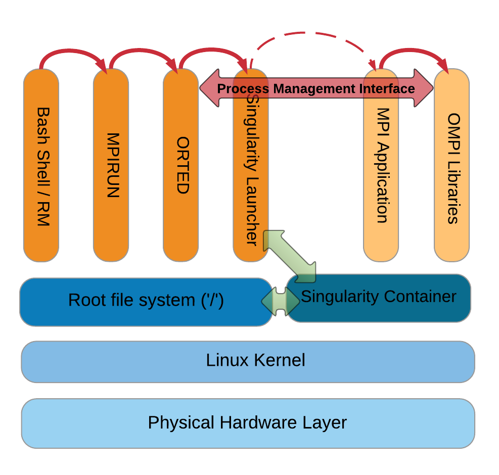

One of the architecturly defined features in Singularity is that it can execute containers like they are native programs or scripts on a host computer. As a result, integration with schedulers is simple and runs exactly as you would expect. All standard input, output, error, pipes, IPC, and other communication pathways that locally running progams employ are syncronized with the applications running locally within the container.
Additionally because Singularity is not emulating a full hardware level virtulization paradigm, there is no need to seperate out any sandboxed networks or file systems because there is no concept of user-escalation within a container. Users can run Singularity containers just as they run any other program on the HPC resource.
Another result of the Singularity architecture is the ability to properly integrate with the Message Passing Interface (MPI). Work has already been done for out of the box compatibility with Open MPI (both in Open MPI v2.x as well as part of Singularity). Here is a document that illustrates the Open MPI/Singularity workflow:
From the above image you can follow the invocation pathway:
$ mpirun -np 20 ./ring.sapp Process 0 sending 10 to 1, tag 201 (20 processes in ring) Process 0 sent to 1 Process 0 decremented value: 9 Process 0 decremented value: 8 Process 0 decremented value: 7 Process 0 decremented value: 6 Process 0 decremented value: 5 Process 0 decremented value: 4 Process 0 decremented value: 3 Process 0 decremented value: 2 Process 0 decremented value: 1 Process 0 decremented value: 0 Process 0 exiting Process 1 exiting Process 2 exiting Process 3 exiting Process 4 exiting Process 5 exiting Process 6 exiting Process 7 exiting Process 8 exiting Process 9 exiting Process 10 exiting Process 11 exiting Process 12 exiting Process 13 exiting Process 14 exiting Process 15 exiting Process 16 exiting Process 17 exiting Process 18 exiting Process 19 exiting